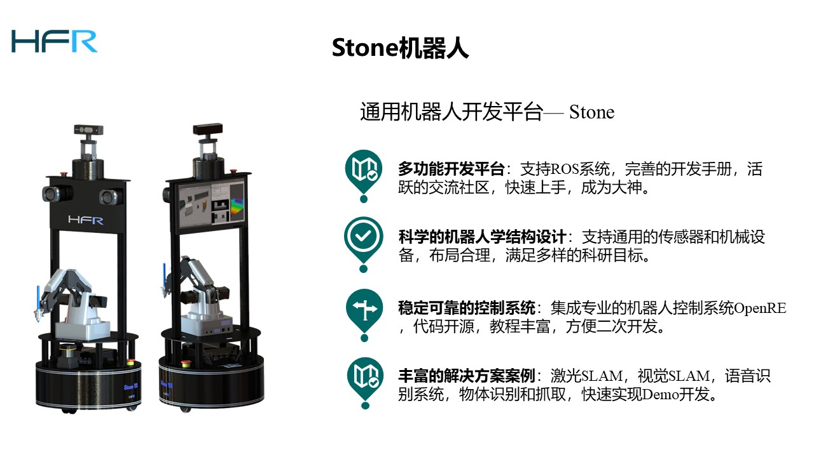
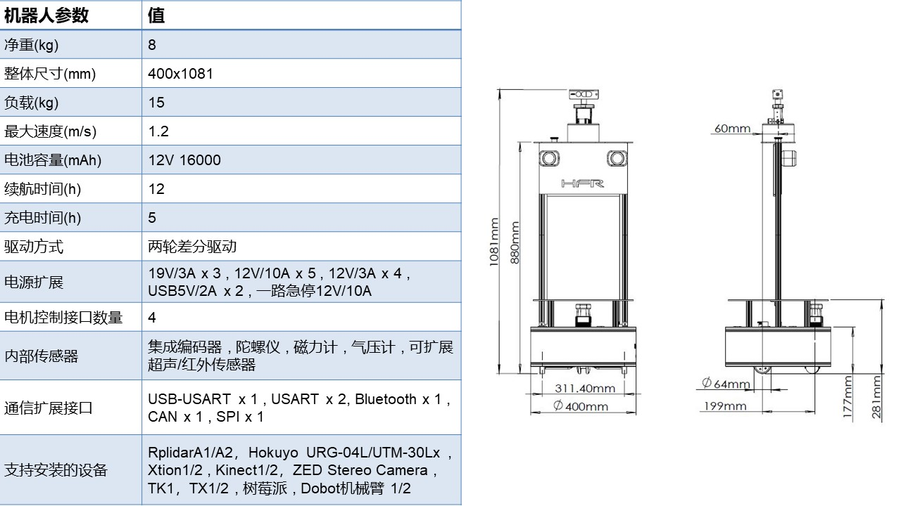
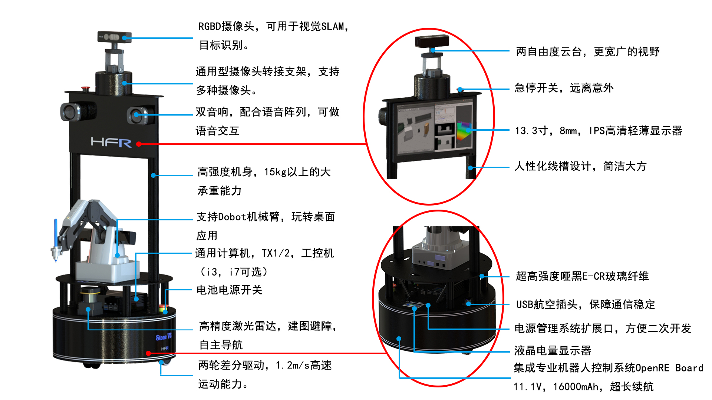

1. Stone机器人
1.1. 概述
墨雅敦庄，举重若轻

多功能通用型机器人研究开发平台，内外兼修，集成专业的控制系统，适用于机器人相关领域的研究和产品Demo研发。
1.2. 外形及性能参数

1.3. 设计特点

Stone是一款采用前万向后差速驱动底盘布局的中型机器人开发平台。其主体结构由高强度哑黑E-CR玻纤板和2020型磨砂黑铝合金柱螺接而成，使得Stone拥有15Kg载重能力的同时也拥有墨黑儒雅的风度。Stone采用了基于32位STM32F407芯片的多功能控制器OpenRE Board，拥有丰富的板载资源和二次开发接口，还集成了十轴惯性测量单元。Stone搭载Power Manager电源管理系统，在拥有电池充放电保护、过流过压保护、电量显示等功能的同时，还能向外界提供5V、12V和19V的稳定电能输出，让用户摆脱上层设备供电不便的烦恼。Stone的设计从用户角度出发，设计了双急停开关和航空通信插头，在顶部搭载2自由度云台、13.3寸IPS显示器和高保真双音响，让整机布局科学合理，人机交互变得更为简单便捷。一如既往，Stone传承了HFR机器人系列高通用化、高拓展性的血统，可支持多款主流的激光雷达、单板计算机、RGBD摄像头。更不一样的是，Stone支持主流的桌面机械臂，如Dobot、7Bot等，让你玩转桌面应用。Stone支持OpenRE机器人库和ROS系统，完善的开发教程，满足ROS开发、SLAM研究者的需求，适用于机器人相关领域的研究和产品Demo研发。
1.4. 套餐价格
| Stone 套餐 | 属性 | 价格(不带发票) |
|---|---|---|
基础版 |
1. 机械结构(包含底盘、支杆，显示器)，不包含机械臂、云台 2. 控制电路，电源电路，配套开发调试硬件，电池套装x1 3. 技术手册，社区支持，技术交流和指导 (不提供免费教学培训) |
9700 RMB |
| 导航低配版(推荐) | 1. 基础版全部内容 2. 酷睿 i3 4G/64G SSD工控机 + rplidar a2(激光雷达) |
14400 RMB |
| 导航高配版 | 1. 基础版全部内容 2. 酷睿 i7 8G/120G SSD工控机 + rplidar a2(激光雷达) |
15900 RMB |
视觉低配版 |
1. 导航低配版全部内容 2. PrimeSense Xtion RGBD 摄像头 + 云台 |
16800 RMB |
视觉高配版(推荐) |
1. 导航高配版全部内容 2. PrimeSense Xtion RGBD 摄像头 + 云台 3. 无线键鼠、PS3遥控器 |
18800 RMB |
豪华版 |
1. 视觉高配版 2. Dobot 机械臂（带吸盘、手抓、气泵） |
28800 RMB |
定制版 |
1. 定制传感器，设备，控制器，培训教学服务，高校机器人实验室搭建 2. 定制 导航/识别/跟踪/抓取功能 ，RoboCup 比赛培训（保拿国家级一等奖） |
¥¥¥¥¥ RMB |
1.5. 实验演示
综合来说，Stone已经很好的个人机了，有一定的载重能力，支持Dobot机械臂，适合小实验室和个人机器人研究。但是还不能完成一些复杂的任务，比如抓取一瓶水，开个门，负载也有限，所以有更高需求的请看Giraffe，Giraffe有着庞大的身躯和超大的负载能力，可以支持HandsFree，或者配合Hands机械臂和UR系列的机械臂，可以胜任大部分的机器人研究任务。